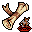

巻物 Scroll
英語版 CrawlWiki の記事「Scroll」(0.31 向け、2024-02-27 版)の翻訳です。原文の著者は編集履歴をご覧ください。
この記事は 0.31 の時点の内容で、最新の 0.34 とは違うところがあるかもしれません。
| 羊皮紙に記された使い捨ての魔法の文章だ。専門の筆記者か、魔道士の手によって書かれたものだろう。これは大声で読み上げることで、誰でも魔法の文章の力を発動することができる。しかし、記された魔法の種類は最初から明らかではない。 |
 巻物は使い捨てのアイテムで、読む(コマンドは r)とさまざまな魔法の効果が起きる。ランダムに生成された戦利品として見つかるほか、一部の店で買うこともできる。未鑑定の巻物は、読むか鑑定の巻物を使うかして鑑定するまで、意味不明な名前で表示される。この名前はゲームごとにランダムに決まり、巻物の効果の手がかりにはならない。
巻物は使い捨てのアイテムで、読む(コマンドは r)とさまざまな魔法の効果が起きる。ランダムに生成された戦利品として見つかるほか、一部の店で買うこともできる。未鑑定の巻物は、読むか鑑定の巻物を使うかして鑑定するまで、意味不明な名前で表示される。この名前はゲームごとにランダムに決まり、巻物の効果の手がかりにはならない。
どのキャラクターも最初から巻物を読める。ただし、次の状態のあいだは巻物をまったく読めない。
- 無知性
- バーサーク
- 混乱
- 静寂
- 包み込み(アンデッドか非生物なら読める)
- 一部の不利な変身
- 「巻物×」の状態(危険な巻物の使用不可の変異があるとダメージを受けたときにこの状態になる。ゲヘナにいるあいだもこの状態になる)
未鑑定の巻物を読むと、その巻物はなくなる。ただし獲得の巻物は例外だ(必ず手元に残る)。また、鑑定済みの巻物で何かを選ぶ必要があるものなら、Escape を押せば時間を使わずに安全に取りやめられる。
巻物は必ず自分のターンの始めに読まれる。巻物を「読む」にはふつう1.0ターンかかる。この場合、巻物の効果がまずその場で起き、残りの1.0ターンは何もせずに過ごすことになる。
モンスターは巻物を読めない。
巻物の一覧
| タイル | 〜の巻物 | 出現率[1] | 説明 |
|---|---|---|---|
| 獲得 | とても少ない | 自分のスキルに合わせて選ばれた3つのアイテムのどれか1つか、金貨の山を手に入れられる。 | |
| 忘却 | やや少ない | 覚えている呪文を1つ忘れて、呪文レベルを空けられる。 | |
| |
瞬間移動 | やや少ない | 視界内の空いているマスに瞬間移動する。行き先は自由に選べる。 |
| |
魔力の武器 | 少ない | 選んだアーティファクトでない武器に、ランダムなブランドを付ける。 |
| |
蝶 | やや少ない | 周りを友好的な蝶で埋めつくす。場所を空けるため、ほかの生き物は吹き飛ばされる。1回のゲームでは、この巻物と召喚の巻物のどちらか一方しか出ない。 |
| |
防具強化 | やや少ない | 選んだアーティファクトでない防具か盾の強化値を+1する。 |
| |
武器強化 | やや少ない | 選んだアーティファクトでない武器の強化値を+1する。 |
| |
恐慌 | やや少ない | 視界内のすべての敵を恐慌させようとする。意志力による判定があり、成功すると敵は逃げ出す。 |
| |
煙幕 | やや少ない | 広がっていく霧を生み出し、視界をさえぎる。 |
| |
鑑定 | とても多い | 未鑑定の薬か巻物を1種類鑑定する。 |
| |
焼き討ち | やや少ない | 視界内のすべての生き物に内なる炎を宿らせる。宿された者は死ぬと炎の爆発を起こす。 |
| |
騒音 | やや少ない | 大きな音を立てる。 |
| |
毒 | 少ない | 視界内の誰もいないマスすべてを猛毒の雲で満たす。 |
| |
啓示 | やや少ない | 今いる階の地図を明らかにする。さらに1ターンのあいだ、壁の向こうが見え、霊視も得られる。 |
| |
静寂 | 少ない | 静寂の領域を作り出す。その中では呪文も神の能力も使えず、巻物も読めない。 |
|  |
召喚 | やや少ない | 今いる階でふだん敵として出てくるような生き物を召喚する。敵の呪文影の怪物を何回か唱えたのと同じくらいの効果だ。1回のゲームでは、この巻物と蝶の巻物のどちらか一方しか出ない。 |
| |
テレポート | 多い | 3–5ターン後に、今いる階のランダムな場所へテレポートする。すでにテレポートが始まっている最中に読むと、そのテレポートを取り消す。 |
| |
拷問 | 少ない | 読んだ本人も含め、視界内のすべての生き物に拷問を与える。 |
| |
脆弱 | やや少ない | 読んだ本人も含め、視界内のすべての生き物の意志力を半分にする。 |

出現率
巻物1種類あたりの出現率(小数点以下第1位に丸めた値)。[2]
- とても多い: 26.1%
- 多い: 13.1%
- やや少ない: 4.7%
- 少ない: 2.0%
- とても少ない: 1.2%
関連項目
変更履歴
- 0.31より前は、モンスターも巻物を読めた(この変更の時点でモンスターが読める巻物は召喚の巻物だけだった)。
- 0.28で、巻物の出現率がより一貫したものに整理された。このバージョンより前は、無知性の状態でも巻物の読み上げに80%の確率で失敗するだけだった(解呪ができるようにするため)。
- 0.27より前はかすみ目の変異があった。この変異があると巻物を読むのが遅くなり、効果が出るのも遅れた。
- 0.16より前は、かすみ目の変異があると、巻物を読もうとしたときに一定の確率で失敗した。失敗率は変異の段階ごとに上がった。
- 0.15より前は、火炎や地獄の業火のダメージを受けるたびに、持っている巻物がアイテムの破壊にあう可能性があった。保存のエゴがあったり、ACが高かったりすると、その確率は下がった。
- 0.14より前は、場違いなときに巻物を読むと(たとえば呪われたアイテムを何も装備していないときに解呪の巻物を読むなど)、鑑定されないまま巻物が無駄になった。
- 0.10より前は、魔法の能力を持たないキャラクターが魔法に触れる手段は巻物を読むことだけで、それで呪文詠唱を鍛えることができた。
廃止された巻物
- 魔法の地図の巻物 - 0.31で啓示の巻物に変わった。
- 聖なる御言葉の巻物 - 0.29で削除され、毒の巻物に置き換えられた。
- 解呪の巻物 - 0.27で、アシェンザリ以外によるアイテムの呪いがすべてなくなったのに伴って削除された。
- 無意味の巻物 - 0.27で削除された。
- 充填の巻物 - 0.21でワンドの仕組みが見直されたときに削除された。
- 防具呪いの巻物、装身具呪いの巻物、武器呪いの巻物 - 0.18で、アシェンザリがアイテムを直接呪う能力を授けるようになったときに削除された。
- 武器強化の巻物 I/II/III - 0.15で武器強化の巻物にまとめられた。
- 武器研ぎの巻物 - 0.13で魔力の武器の巻物に変わった。
- 不浄なる創造の巻物 - 0.11で、短いあいだ召喚の巻物の代わりになっていた。
- 呪い感知の巻物 - 0.11で削除された。
- 紙の巻物 - 0.7で削除された。
- 古い紙の巻物 - 安定版のゲームに存在したことは厳密には一度もない。古いゲームを新しいバージョンに引き継いだときに、紙の巻物がこれに置き換わるようになっていた。
出典
- ↑ item-prop.cc:2442 (0.31.0)
- ↑ makeitem.cc:1221 (0.31.0)
| 巻物 |
|---|
| 獲得 • 忘却 • 蝶 • 瞬間移動 • 魔力の武器 • 防具強化 • 武器強化 • 恐慌 • 煙幕 • 鑑定 • 焼き討ち • 騒音 • 毒 • 啓示 • 静寂 • 召喚 • テレポート • 拷問 • 脆弱 |